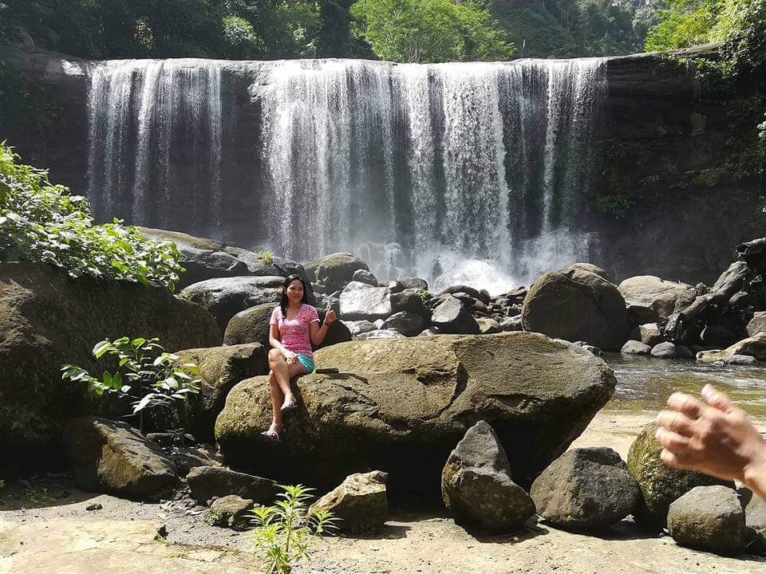
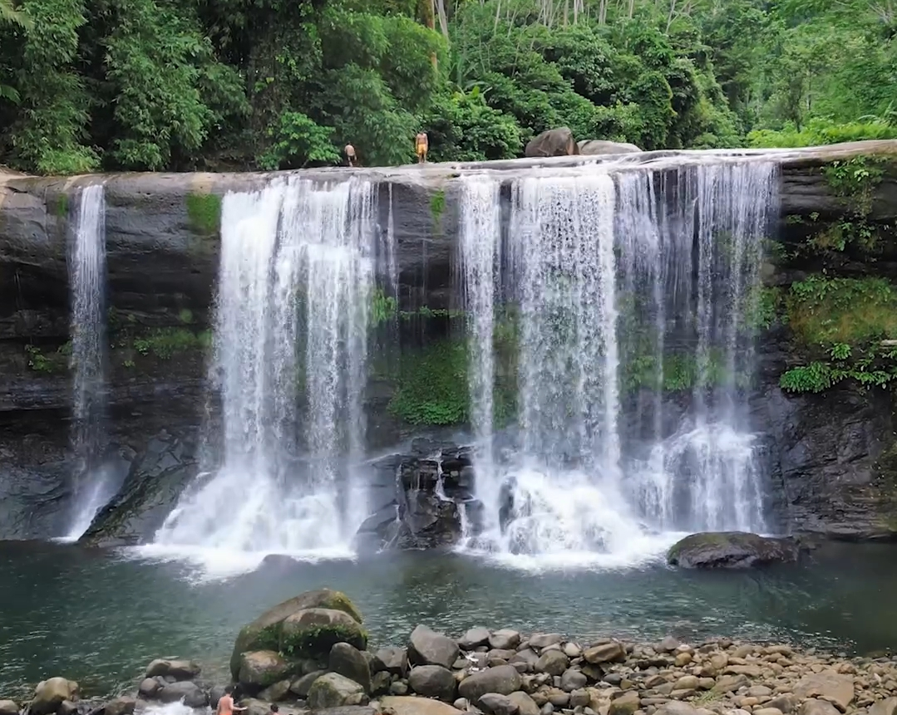
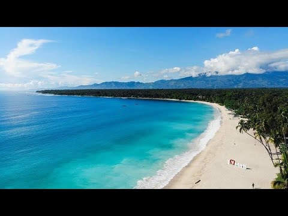
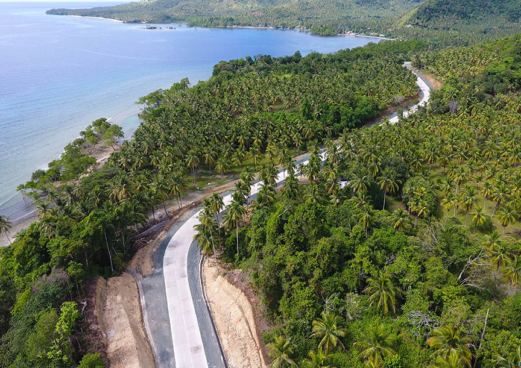
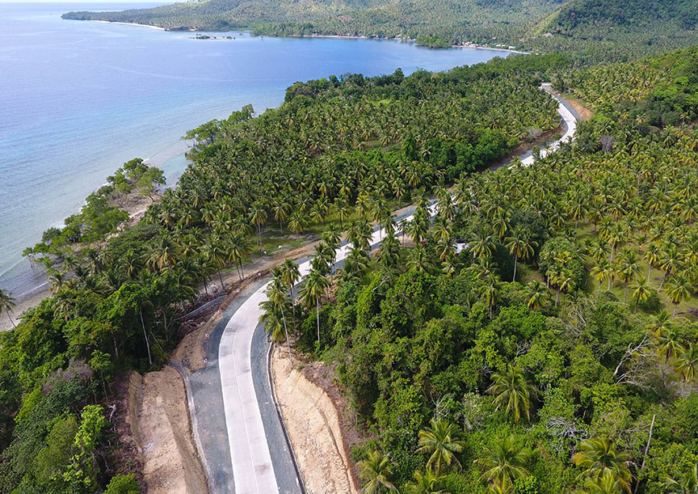
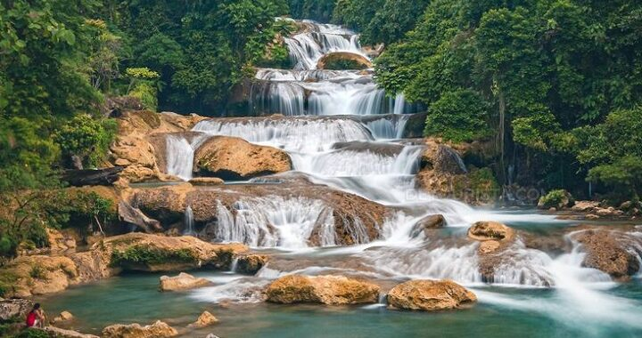
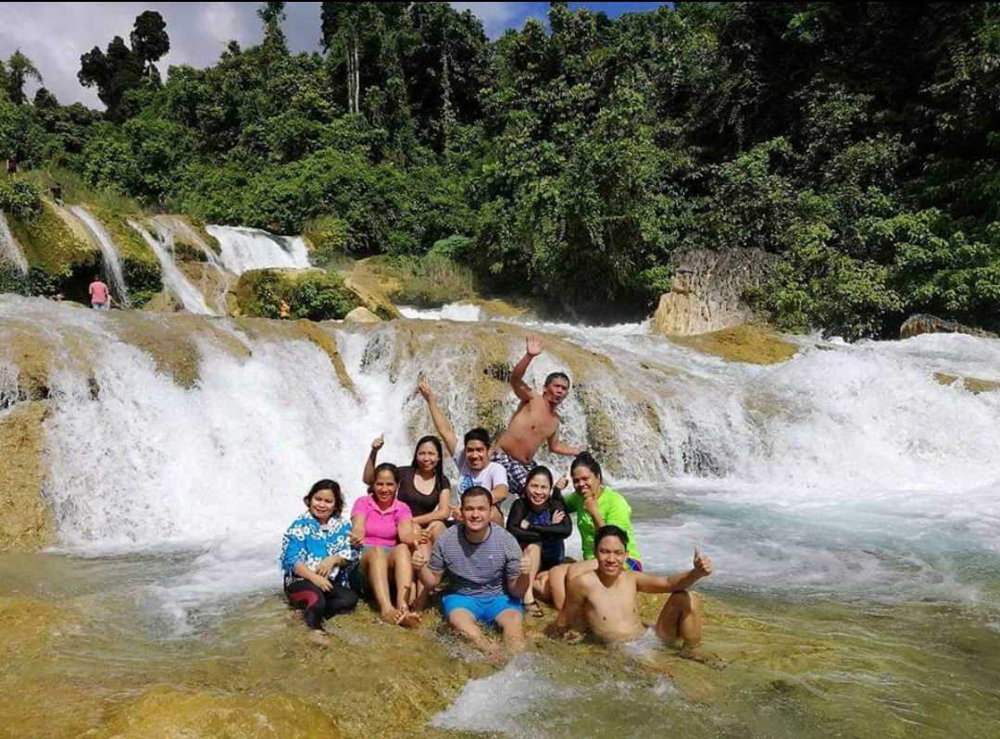

  Curtain Falls is situated in Campawan, still in Baganga, Davao Oriental. This majestic waterfalls is a three-tier water falls with its main tier as the widest and tallest and possesses a curtain-like water flow that makes it attractive to visitors. Its downstream or lower level is also suitable for cliff jumping because of its clear and deep water. This place is worthy to be bragged in your facebook post.
• DAHICAN BEACH

 Dahican Beach in Mati City(Capital), Davao Oriental is referred to as the Boracay of the South as it possesses a powdery and fine white sand, long and wide beach front and crystal clear blue water. However, since the place faces the Pacific Ocean, waves are unimaginably high especially during monsoon season. Despite its high wave, swimming is still a kind of adventure plus you will get to try surfing or skim boarding if you want as locals offer tutorials at a minimal fee.
Dahican Beach in Mati City(Capital), Davao Oriental is referred to as the Boracay of the South as it possesses a powdery and fine white sand, long and wide beach front and crystal clear blue water. However, since the place faces the Pacific Ocean, waves are unimaginably high especially during monsoon season. Despite its high wave, swimming is still a kind of adventure plus you will get to try surfing or skim boarding if you want as locals offer tutorials at a minimal fee.
• CAPE SAN AGUSTIN or PAROLA
 
Cape San Agustin or also known as Parola(LightHouse) is located at the SouthEastern-most tip of Davao Region in the municipality of Governor Generoso. Climbing the tall lighthouse offers you a 360 degrees view of the paradise municipality and you will surely find a wonderful instagrammable shots. Travel time from Davao City takes about 5hours, but going to the place alone, you will realize the worth of the long travel because as you approach the municipality, you will surely be amazed by its wonderful scenery. Just imagine having a roadtrip with the view of the calm Davao gulf to your left and the beautiful landscape of Mount Hamiguitan to your right up until you reach the Parola.

Cape San Agustin or also known as Parola(LightHouse) is located at the SouthEastern-most tip of Davao Region in the municipality of Governor Generoso. Climbing the tall lighthouse offers you a 360 degrees view of the paradise municipality and you will surely find a wonderful instagrammable shots. Travel time from Davao City takes about 5hours, but going to the place alone, you will realize the worth of the long travel because as you approach the municipality, you will surely be amazed by its wonderful scenery. Just imagine having a roadtrip with the view of the calm Davao gulf to your left and the beautiful landscape of Mount Hamiguitan to your right up until you reach the Parola.
• ALIWAGWAG FALLS
  Found in the Municipality of Cateel, Davao Oriental, this multi-tiered waterfalls is the highest in the country with respect to the aggregate height of all its level. Experience their monkey and hanging bridge found at the top-most level and at the foot of the falls respectively. The two bridges were positioned and installed crosswise for you to have a wonderful view of the waterfalls. Swimming in some of its level is fun because its clear water offers different kinds of depth that suit your wants and even your little children. You must try cliff jumping, swimming, having a picnic with your family in its cottages and other adventures.